먼저 생각해 보세요.
Mina ist die Freundin, mit der ich jeden Sonntag telefoniere. 여기서 mit der는 누구를 가리키나요?
mit der는 앞에 나온 die Freundin을 가리켜요. '그 친구와 함께'라는 뜻이에요.
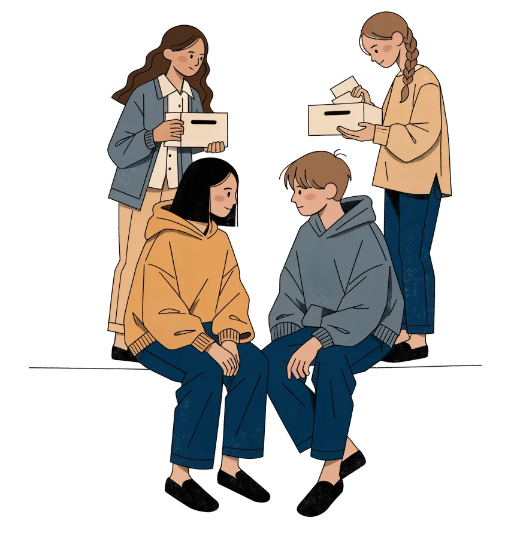
10월이에요. 팟캐스트 팀이 이번에는 우정을 이야기해요. 학생들의 고민을 받는 상자, Kummerkasten도 만들어요. 그런데 Lukas에게 비밀이 하나 생겼어요.
눌러서 들어 보세요.
먼저 생각해 보세요.
Mina ist die Freundin, mit der ich jeden Sonntag telefoniere. 여기서 mit der는 누구를 가리키나요?
mit der는 앞에 나온 die Freundin을 가리켜요. '그 친구와 함께'라는 뜻이에요.
Lektion 2의 낱말 다섯 개를 다시 떠올려 보세요.
문법 Relativsätze im Dativ und mit Präposition (der Freund, mit dem …), Adjektivdeklination 정리
이 과를 마치면 우정이 무엇인지 이야기하고, 사람을 자세히 설명하고, 친구의 고민에 조언할 수 있어요.
10월의 어느 방과 후, 9b 교실이에요. 팟캐스트 팀이 우정을 주제로 이야기해요.
들으면서 찾아보세요. Yuna가 일요일마다 통화하는 친구는 누구인가요?
며칠 뒤 쉬는 시간, 학교 운동장이에요. Lukas가 Yuna에게 고민을 털어놓아요.
들으면서 찾아보세요. Yuna는 Lukas에게 무엇을 해 보라고 하나요?
두 대화를 듣고 답하세요.
Was ist für Emma ein echter Freund?
Lukas findet Humor nicht wichtig.
Lukas sagt: „Ein Freund ohne Humor? Nein, danke.“
Wer ist Mina?
Was ist der Kummerkasten?
In wen hat sich Lukas verliebt?
Hanna weiß, dass Lukas in sie verliebt ist.
아직 몰라요. Lukas는 수줍어서 말하지 못했어요.
Yuna는 Lukas에게 무엇을 권하나요?
낱말 32개예요. 낱말이나 예문 앞의 단추를 누르면 소리가 나요. 명사는 der, die, das를 색으로 구분했어요.
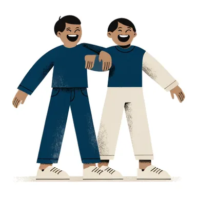
die Freundschaft, die Freundschaften 우정
Unsere Freundschaft ist mir wichtig.우리 우정은 나에게 중요해요.
echt 진짜의, 참된
Ein echter Freund lügt nicht.진짜 친구는 거짓말하지 않아요.
der Kumpel, die Kumpel (편한) 친구
Tim ist ein alter Kumpel von mir.Tim은 내 오랜 친구예요.
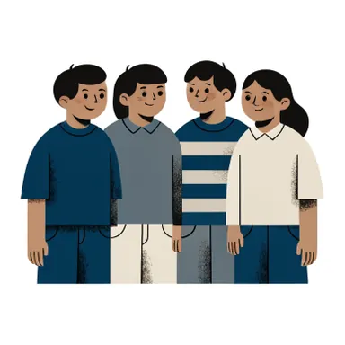
die Clique, die Cliquen 친구 무리
Sie hat eine neue Clique.그 애에게 새 친구 무리가 생겼어요.
jemand 누군가, 어떤 사람
Ein Freund ist jemand, dem ich vertraue.친구는 내가 믿는 사람이에요.
niemand 아무도 (~않다)
Niemand weiß es.아무도 그걸 몰라요.
sich verlassen (du verlässt dich, er verlässt sich) 믿고 기대다
Auf Emma kann ich mich verlassen.Emma는 믿을 수 있어요.
zuverlässig 믿음직한
Elif ist sehr zuverlässig.Elif는 아주 믿음직해요.
treu 한결같은, 의리 있는
Ein treuer Freund bleibt bei dir.의리 있는 친구는 네 곁에 남아요.
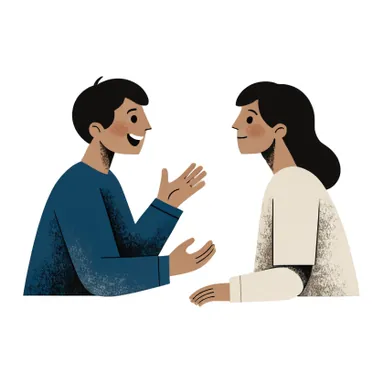
zuhören, hat zugehört 귀 기울여 듣다
Yuna hört mir immer zu.Yuna는 늘 내 말을 들어 줘요.
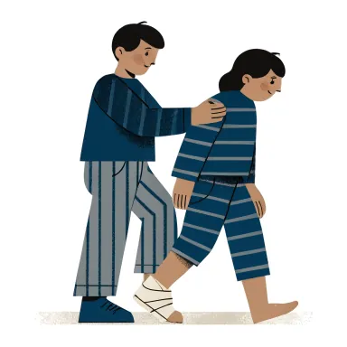
unterstützen, hat unterstützt 돕다, 힘이 되어 주다
Meine Freunde unterstützen mich.친구들이 나에게 힘이 되어 줘요.
gemeinsam 함께, 공통의
Wir haben viele gemeinsame Hobbys.우리는 같은 취미가 많아요.
verschieden 다른, 여러 가지의
Mina und ich sind sehr verschieden.Mina와 나는 많이 달라요.
der Humor 유머
Lukas hat viel Humor.Lukas는 유머가 많아요.
die Liebe 사랑
Liebe und Freundschaft sind wichtig.사랑과 우정은 중요해요.
sich verlieben, hat sich verliebt 사랑에 빠지다
Lukas hat sich in Hanna verliebt.Lukas는 Hanna를 좋아하게 됐어요.
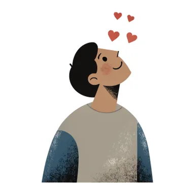
verliebt 사랑에 빠진
Er ist in sie verliebt.그는 그 애를 좋아해요.
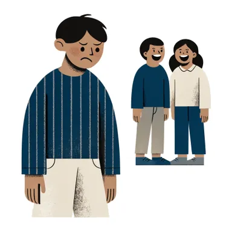
eifersüchtig 질투하는
Warum bist du so eifersüchtig?너 왜 그렇게 질투해?
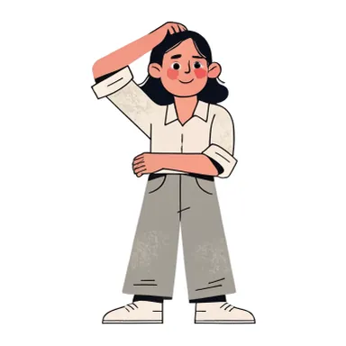
peinlich 창피한, 민망한
Das ist mir peinlich.그건 창피해요.
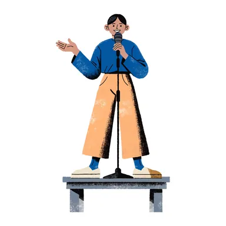
mutig 용감한
Sei mutig und sprich mit ihr!용기를 내서 그 애와 이야기해 봐!
das Herz, die Herzen 심장, 마음
Mein Herz schlägt schnell.가슴이 빨리 뛰어요.
ansprechen (du sprichst an, er spricht an) 말을 걸다
Ich möchte sie ansprechen.나는 그 애에게 말을 걸고 싶어요.
der Kummerkasten, die Kummerkästen 고민 상자
Schreib an den Kummerkasten!고민 상자에 편지를 써 봐!
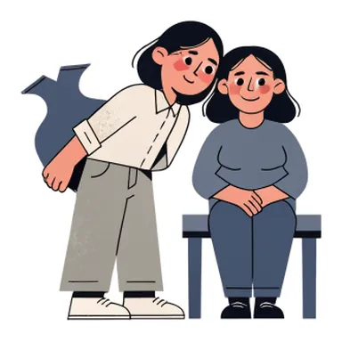
lügen, hat gelogen 거짓말하다
Du sollst nicht lügen.거짓말하면 안 돼.
die Lüge, die Lügen 거짓말
Das ist eine Lüge.그건 거짓말이에요.
die Wahrheit 진실, 사실
Sag mir bitte die Wahrheit.나에게 사실을 말해 줘.
verzeihen, hat verziehen 용서하다
Kannst du mir verzeihen?나를 용서해 줄 수 있어?
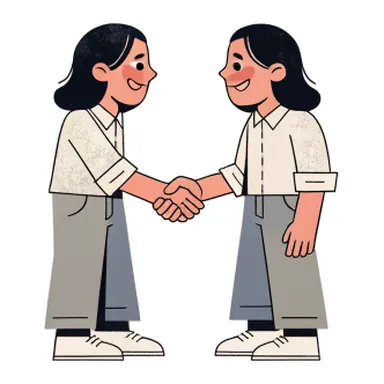
sich versöhnen, hat sich versöhnt 화해하다
Wir haben uns wieder versöhnt.우리는 다시 화해했어요.
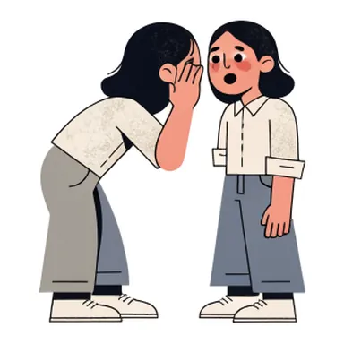
weitererzählen, hat weitererzählt 다른 사람에게 옮기다
Erzähl das bitte nicht weiter!그거 다른 사람한테 말하지 마!
ignorieren, hat ignoriert 못 본 척하다, 무시하다
Sie ignoriert mich.그 애가 나를 못 본 척해요.
beleidigt 토라진, 기분이 상한
Bist du beleidigt?너 토라졌어?
sich melden, hat sich gemeldet 연락하다
Sie meldet sich nicht mehr.그 애가 더는 연락하지 않아요.
이 과의 낱말로 여덟 문제를 풀어요.
예문을 보고 답해 보세요.
jemand, dem ich vertraue에서 dem이 3격인 까닭은 무엇인가요?
규칙
관계대명사의 성과 수는 앞의 명사를 따르고, 격은 관계문 안에서 하는 일을 따라요. helfen, vertrauen, gefallen처럼 3격과 함께 쓰는 동사가 오면 dem, der, denen을 써요. 동사는 맨 끝에 와요.
| 1격 | 4격 | 3격 | |
|---|---|---|---|
| 남성 | der | den | dem |
| 중성 | das | das | dem |
| 여성 | die | die | der |
| 복수 | die | die | denen |
주의 3격 복수만 관사 den과 달라요. 관계대명사는 denen이에요.
예문을 보고 답해 보세요.
das Mädchen, mit dem ich spreche에서 왜 mit der가 아니라 mit dem인가요?
규칙
전치사는 관계대명사 바로 앞에 와요. 관계대명사의 격은 전치사가 정해요. mit, von, bei 뒤에는 3격을, für, ohne 뒤에는 4격을 써요. sich verlassen auf, verliebt in처럼 동사가 전치사와 격을 정하기도 해요.
| 두 문장 | 한 문장 |
|---|---|
| Das ist Tim. Ich spiele mit ihm Fußball. | Das ist Tim, mit dem ich Fußball spiele. |
| Das ist Mina. Ich telefoniere mit ihr. | Das ist Mina, mit der ich telefoniere. |
| Das sind meine Freunde. Ich lache mit ihnen. | Das sind meine Freunde, mit denen ich lache. |
주의 전치사와 관계대명사는 떨어지지 않아요. 한국어와 달리 전치사를 빼면 안 돼요.
예문을 보고 답해 보세요.
mit meiner besten Freundin에서 3격 형용사는 어떻게 끝나나요?
규칙
형용사 끝은 A2에서 배웠어요. 여기서 한 번에 정리해요. der, das, die 뒤에서는 -e나 -en으로 끝나요. ein, mein, kein 뒤에서는 관사가 보여 주지 못하는 성을 형용사가 -er, -es로 보여 줘요.
| ein, kein 뒤 | der, die 뒤 | |
|---|---|---|
| 남성 1격 | ein echter Freund | der echte Freund |
| 중성 1·4격 | ein gutes Gefühl | das gute Gefühl |
| 여성 1·4격 | eine ehrliche Antwort | die ehrliche Antwort |
| 남성 4격 | einen guten Rat | den guten Rat |
| 3격 | mit einem guten Freund | mit dem guten Freund |
| 복수 | meine besten Freunde | die besten Freunde |
주의 3격과 관사가 있는 복수는 언제나 -en이에요. 관사가 없는 복수는 -e로 끝나요. echte Freunde.
팟캐스트 팀이 고민 상자에 온 편지에 답해요. 듣고 답하세요.
Der Kummerkasten
Elif Heute im Kummerkasten: Ein Junge schreibt, dass sein bester Freund ein Geheimnis weitererzählt hat.
Elif Jetzt ist er enttäuscht und spricht nicht mehr mit ihm. Was raten wir ihm?
Emma Ich würde mit dem Freund sprechen. Vielleicht tut es ihm leid.
Yuna Ein Freund, dem man nicht mehr vertraut, ist kein Freund. Aber jeder macht Fehler.
Emma Wenn er sich entschuldigt, kann man ihm verzeihen.
Elif Unser Rat: Sprecht über das Problem und versöhnt euch!
Was hat der beste Freund gemacht?
Der Junge spricht noch jeden Tag mit seinem Freund.
Er spricht nicht mehr mit ihm.
Was würde Emma tun?
팟캐스트 팀은 무엇을 권하나요?
듣고 알맞은 것을 고르세요.
Emma는 그 남자아이에게 무엇을 해 주나요?
Das ist der Junge, dem ich bei den Hausaufgaben helfe.
Yuna는 Mina와 언제 통화하나요?
Mina ist die Freundin, mit der ich jeden Sonntag telefoniere.
Lukas가 가리키는 사람은 누구인가요?
Das ist das Mädchen, von dem ich dir erzählt habe.
Elif가 언제나 믿는 사람은 누구인가요?
Meine Brüder sind die Menschen, auf die ich mich immer verlassen kann.
고민 상자에 편지가 왔어요. 읽고 답하세요.
Ein Brief an den Kummerkasten
Liebes „Mitreden“-Team, ich habe ein Problem mit meiner besten Freundin Nele.
Wir kennen uns seit der Grundschule. Sie war immer die Person, der ich alles erzählt habe.
Seit drei Wochen hat sie eine neue Clique, mit der sie in jeder Pause zusammen ist. Mich ignoriert sie und sie meldet sich nicht mehr.
Gestern habe ich sie gefragt: „Was ist los?“ Sie hat gesagt: „Nichts.“ Aber das ist eine Lüge.
Ich bin traurig und auch ein bisschen eifersüchtig. Soll ich ihr einen Brief schreiben oder soll ich warten?
Eine Schülerin aus der 8. Klasse
Seit wann kennen sich die zwei Freundinnen?
Mit wem ist Nele jetzt in den Pausen zusammen?
Nele erzählt der Schülerin, was los ist.
Sie sagt nur: „Nichts.“
Wie fühlt sich die Schülerin?
글쓴이가 묻는 것은 무엇인가요?
그날 오후 Lukas가 Hanna에게 메시지를 보냈어요. 읽고 답하세요.
Freitag, 16 Uhr
Hallo Hanna, hier ist Lukas aus dem Bus. Am Samstag läuft ein neuer Film im Kino. Hast du Lust?
Hi Lukas! Am Samstag kann ich leider nicht. Da besuche ich meine Oma, bei der ich oft am Wochenende bin.
Schade. Und am Sonntag?
Sonntag geht! Mein Bruder Felix kommt auch mit. Das ist der Junge, mit dem du mich gestern gesehen hast.
Dein Bruder? Super! Dann bis Sonntag um drei am Kino.
Hanna hat am Samstag Zeit.
Am Samstag besucht sie ihre Oma.
Wer ist Felix?
Wann treffen sich Lukas und Hanna?
3격 관계대명사예요. 알맞은 말을 고르세요.
Das ist der Freund, ich vertraue.
vertrauen은 3격과 함께 써요.
Das ist die Freundin, ich alles erzähle.
Das ist das Kind, ich bei den Hausaufgaben helfe.
Das sind die Freunde, ich oft schreibe.
3격 복수는 denen이에요.
Tim ist ein Kumpel, ich immer helfe.
Mina ist eine Freundin, ich oft schreibe.
전치사 뒤에 오는 관계대명사예요. 알맞은 말을 고르세요.
Das ist der Kumpel, mit ich Fußball spiele.
Mina ist die Freundin, mit Yuna telefoniert.
Das ist das Mädchen, von Lukas erzählt hat.
das Mädchen은 중성이에요.
Das sind die Leute, mit ich Musik mache.
Emma ist eine Freundin, auf ich mich verlassen kann.
sich verlassen auf 뒤에는 4격이 와요.
Das ist der Junge, in Hanna verliebt ist.
verliebt in 뒤에는 4격이 와요.
형용사 끝이에요. 알맞은 말을 고르세요.
Tim ist ein Freund.
Ich brauche einen Rat.
Das ist eine Antwort.
Ich spreche mit meiner Freundin.
Freunde sind wichtig.
관사가 없는 복수는 -e로 끝나요.
Hanna ist das Mädchen mit den Haaren.
낱말을 순서대로 눌러 문장을 만드세요.
내가 믿는 친구야.
Mina는 내가 통화하는 친구야.
나는 그 애를 좋아하게 됐어.
진짜 친구는 믿을 수 있어.
낱말과 뜻을 짝지으세요.
듣고 그대로 써 보세요.
Ein echter Freund hört zu. 진짜 친구는 귀 기울여 들어 줘.
Ich habe mich verliebt. 나 사랑에 빠졌어.
Auf dich kann ich mich verlassen. 너는 믿을 수 있어.
Ein echter Freund ist jemand, der … 진짜 친구는 ~하는 사람이야.
… jemand, dem ich vertraue. 내가 믿는 사람
… jemand, mit dem ich lachen kann. 같이 웃을 수 있는 사람
Auf sie kann ich mich verlassen. 그 애는 믿을 수 있어.
Sie ist die Freundin, mit der ich … 그 애는 내가 같이 ~하는 친구야.
Er ist ehrlich und zuverlässig. 그는 정직하고 믿음직해.
Wir sind sehr verschieden, aber … 우리는 많이 다르지만 …
Wir lachen viel zusammen. 우리는 같이 많이 웃어.
Ich habe ein Problem mit … ~와 문제가 있어.
Ich weiß nicht, was ich tun soll. 어떻게 해야 할지 모르겠어.
Ich bin enttäuscht von … ~에게 실망했어.
Kannst du mir einen Rat geben? 조언 좀 해 줄 수 있어?
An deiner Stelle würde ich … 내가 너라면 ~할 거야.
Sprich doch mit ihm! 그 애와 이야기해 봐!
Sei mutig! 용기를 내!
Vielleicht tut es ihm leid. 그 애도 미안해할지 몰라.
대화 B에서 역할을 하나 고르세요. 상대의 말은 음성으로 나오고, 내 차례에는 직접 말해요.
가장 친한 친구를 떠올리며 적으세요. 완성된 문장을 소리 내어 읽어 보세요.
Minjun und ich kennen uns seit der Grundschule.
Minjun ist ein Mensch, mit dem ich jeden Tag Basketball spiele.
Minjun ist ehrlich und lustig.
Auf Minjun kann ich mich verlassen.
Antwort an den Kummerkasten
위 편지를 쓴 8학년 학생에게 팟캐스트 팀이 되어 답장을 써요. 일곱 문장쯤 써요.
Liebe Schülerin aus der 8. Klasse, ich verstehe dein Problem gut. Es tut weh, wenn die beste Freundin plötzlich keine Zeit mehr hat. An deiner Stelle würde ich nicht warten. Schreib Nele einen ehrlichen Brief oder sprich allein mit ihr. Sag ihr, dass du traurig bist. Eine echte Freundin ist jemand, mit dem man über alles sprechen kann. Vielleicht weiß Nele nicht, wie du dich fühlst. Viel Glück! Dein „Mitreden“-Team
다 쓴 뒤에 확인해 보세요.
Ich kann sagen, was für mich ein echter Freund ist.나에게 진짜 친구가 어떤 사람인지 말할 수 있어요.
Ich kann Personen mit Relativsätzen genau beschreiben.관계문으로 사람을 자세히 설명할 수 있어요.
Ich kann bei Problemen mit Freunden einen Rat geben.친구 사이의 고민에 조언할 수 있어요.